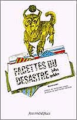

|
John Gelder La Force de l’attente postface de Michel Heimonet pour l'ouvrage
FACETTES DU DESASTRE (Miscellanées) 
Il faut
un courage singulier pour ne pas
Succomber à la dépression et continuer – au Nom de quoi ? Pourtant je continue, dans mon obscurité : L’homme continue en moi, en passe par là.
Georges
Bataille, L’Expérience
intérieure.
Et c'est bien dans le sens magico-religieux que lui donne M. Mauss qu'il faut entendre ici le mot attente. J-M Heimonet Miscellanées (de miscere « mêler, mélanger »). Le plus souvent, recueil d’écrits divers, littéraires ou scientifiques, que ne lie aucun lien de nature logique. Ici, rassemblement de bribes, fragments poétiques et/ou philosophiques, chaos systématisé de tout ce que l’écriture maudite, ou moderne, par une forme ironique d’auto-malédiction, aurait produit de plus désespéré – et parfois de plus beau – depuis la conscience que certains ont pris de ce que nos rapports avec le monde, donc avec nous-mêmes et les autres, par une sorte de lâcheté constitutive de l’homme actuel, étaient à jamais pollués. Perdu dans la myriade de scènes, seynettes, récits, aphorismes, préceptes amoraux, que compose et décompose sans cesse une écriture s’efforçant vers le livre en se gardant d’y parvenir, le lecteur est assailli d’échos ; il entend murmurer d’autres textes, mais sur lesquels, bizarrement, il ne peut mettre aucun nom précis. Il comprend vite qu’i n’a pas affaire à un système, mort, de références ; le réseau où il se perd est formé de connexions objectives : voulues par le force de l’exigence – et non pas recherchées par une forme théorique de l’affectation. Si tel morceau d’humour noir connecte avec Michaux, ou si la prostitution d’un corps autonome et vénal relève d’une expérience (mais justement inverse) qui fut celle d’Artaud, ce n’est pas à des auteurs-à-thèmes ou à-images que John Gelder nous renverrait. En médium, par intuition poétique, sa pensée s’inscrit spontanément sur la plaque sensible affective qui est celle du temps présent : en vertu de laquelle ce n’est pas l’écrivain qui choisit ses fantasmes, mais au contraire ceux-ci, venus de la lecture et de la vie, qui s’imposent à son écriture. Ainsi, tout commence avec un cri de révolte qui nous est familier. Aujourd’hui toujours et plus encore sans doute la « vraie vie » est absente et le monde à réinventer. Haine du vieux monde et désir de vengeance : « Dès mon premier cri de nouveau-né, qui était un cri de haine pour la main qui me viola, je pris la résolution d’exécrer ce monde terrible et fascinant où je pénétrai. » À une époque immémoriale, l’homme fut un animal superbe - un Tigre du Bengale, version geldérienne du « Seigneur de l’étant ». Aujourd’hui, atteint de « la plus horrible des lèpres », la « déliquescence », maladie collective qui frappe la terre tout entière », êtres et choses, il est voué à une lente dégradation. Nous évoluons dans un décor d’apocalypse générale : villes détruites, immeubles désaffectés, rues défoncées où s’amoncellent des cadavres. Mais le pire, c’est qu’on ne meurt pas vraiment. La « Loi souveraine de la dégradation » est inflexible. Elle ne permet pas à l’homme de se soustraire à l’enfer qu’il s’est construit. Si la vie est « le premier bubon d’une lèpre », encore faut-il, comme on dit, faire avec, « apprendre à durer ». En cela nous sommes aidés par la science et la technique. Entre les murs de ces mouroirs modernes, les savants, héritiers du docteur Frankenstein, s’ingénient à revitaliser les déchets de ce qui fut l’Homme. Et ils y parviennent : en créant un homme d’apparence « presque intact(e) », au demeurant incarnation des « épousailles entre le cadavre et le monstre ». À partir de cette dure nécessité de durer, deux voies s’ouvrent au narrateur. Le premier et la plus classique, c’est le retour au non-être. Ici l’oubli dans le néant de l’âne. Avec l’âne, nous sommes irrésistiblement – et ironiquement – convoqués aux théories de Baudrillard. Tout comme l’objet, ce qui n’est autre chose qu’une « cheval déchu » mène une stratégie fatale. N’allant nulle part, dénué de tout projet, enlisé dans une sorte de « paix supérieure » qui est aussi la « quintessence de l’ennui », il résout par l’absence tous les problèmes de communication et d’intersubjectivité. Surtout, il réalise le tour de force de rester hermétique à toutes les formes de rivalité et de compétition : comme chacun le sait, nerf de la vie mais aussi de la violence humaine(s). Et c’est pour cela qu’il fascine, destiné (bien sûr à son insu) aux « voluptés secrètes de l’inexistence » ; parce qu’il ne joue pas le jeu du sujet – lequel consiste à se débattre entre ce qu’il est et la conscience qu’il en a. À quoi il convient d’ajouter que la supériorité stratégique de l’âne sur l’objet de Baudrillard tient à ce qu’il n’est pas simplement et purement, originellement un objet. Mais, en regard avec sa lointaine parenté avec le cheval, un objet devenu objet et sans cesse en train de se réifier : un « objet dont la fonction serait l’effacement ». Voilà donc le genre d’Expérience intérieure que nous propose Gelder. Aux antipodes du supplice intellectuel par lequel, chez Bataille, le sujet, (ipse) se perd dans la totalité à travers l’épuisement de la pensée et du langage, l’extase postule ici l’abrogation de toute conscience. Or l’homme n’est pas l’âne ; il ne jouit pas comme lui, par une grâce « innée » de « l’inanité de l’être ». L’homme pense et ne peut s’empêcher de penser. Dans ces conditions, la seconde voie qui s’ouvre à l’i, opposée à la voie nostalgique et mythique de l’onagre, sera celle, objective, de la lucidité. Cette lucidité, cruelle acuité d’une hyperconscience, est-elle notre damnation ou bien notre chance ? C’est évidemment la question cruciale ; mais aussi – nous y viendrons – la question matrice : la seule susceptible de maintenir, tout en un, le désir et la nécessité de l’écriture. De cette lumière noire, ce qui est sûr, c’est que le narrateur fait un usage accru, nous guidant pour l’exploration de ces fonds glauques, de ce cloaque géant où s’épanouit la vie humaine : « Précédez-moi donc aux enfers, je vous ouvre la voie, je vous couvre » ; exigence de voir l’homme, par conséquent de se voir jusqu’au bout, dont le premier effet est de le distinguer et de le séparer des autres, faire de lui un être hétérogène au « troupeau ». Q’on se garde cependant de prendre à la lettre les manifestations de souverain mépris jetées complaisamment à la face du monde : « Je réponds de ce que vous appelez mon cynisme comme du crime qu’il représente à vos yeux cillés. » La démarché si l’on veut axiologique de Gelder est en effet complexe, qui ne cesse d’osciller entre les pôles extrêmes de l’auto-sacralisation et de l’auto-humiliation. S’élever au-dessus de la médiocrité et de la bassesse ambiantes en se posant comme radicalement différent, comme Autre des autres, cette affirmation de la prérogative individuelle est destinée ici à conjurer le nouveau mal du siècle sous lequel la race humaine périt lentement : « Le pays est en deuil d’en roi, tout y languit dans l’attente d’un sacre improbable. » Non, il ne s’agit en rien d’une profession de foi royaliste ; nous l’avons vu, Gelder est lucide. Mais c’est aussi pourquoi il comprend – et aujourd’hui c’est oser comprendre – que la déliquescence a pour cause l’éradication du sacré sur terre. Qu’elle est liée à l’absence, chez celui qui fut l’homme, du sentiment de l’ineffable, de la capacité de sortir de soi, par delà les limites de sa conservation et de son intérêt propres, afin d’aller, à l’extrême de son désir et de ses forces, fusionner avec l’Univers. Certain textes, résolument fantasmatiques, ont ainsi une fonction resacralisatrice. En flagrant contraste avec l’atmosphère de décomposition qui baigne le recueil, le culte de la force virile est exaltée par des scènes de combat à l’arme blanche où s’affrontent les chevaliers d’un âge d’or futuriste. Mais de telles scènes révèlent aussi bien la face inverse de la lucidité, celle qui exige la dérision du héros, sa défaite ou son abaissement dans les dernières lignes du texte. Car avant d’être un demi-Dieu, celui-ci n’est qu’un homme, et, comme tous les hommes, un peu lâche, un peu douillet, paniqué à l’idée d’endommager ce corps qui par ailleurs lui rend de si mauvais services. Nostalgie de transgression et de dépense sans réserve, peur de la souffrance, c’est aussi le dilemme de l’homme moderne. « On dit de ces étrangers qu’ils galopent sur leurs désirs en les éperonnant. Jusqu’où galoperas-tu avec eux ? » D’où ce qu’il faut bien appeler une révolte douteuse. Car la haine du monde, en raison de sa lucidité, est aussi nécessairement la haine de soi. Ce n’est pas un je absolu qui s’arroge le droit de condamner les autres – tous les autres. La lucidité ne permet pas de laisser dans l’ombre la question de l’origine du mal et de la justification de la révolte. Elle dénonce, de façon implicite, sans démonstration théorico-morale, l’attitude icarienne du révolté métaphysique qui s’élève au-dessus de ce bas monde afin de mieux le maudire. « Ou c’est le monde qui courre à sa ruine ou c’est moi. C’est moi, évidemment, le monde ne court pas, il va d’un pas tranquille, souverainement désinvolte ». Être homme, avoir été jeté et avoir trempé dans l’humain, c’est déjà être damné à l’instar de ses congénères. « Même moi, je ne suis pas innocent. Moi aussi, j’expie ma mauvaise conscience dans cette baraque sordide entre poussière et boue ». Le thème de la « faute originelle » – précisément celle qui donne à l’âne son « air d’éternité » – revient avec l’insistance d’un leitmotiv. La première forme de révolte lucide sera ainsi l’auto-parodie. Il va sans dire que lorsque le narrateur s’écrie : « Je suis le maître justicier des altitudes », il se moque infiniment de soi. C’est pourquoi le sacrifice oscille entre dérisoire et le tragique. Après avoir réduit son existence à ces maux prosaïques que sont « l’insomnie et le mal au dos », le même homme pourra affirmer dans le fragment suivant, sur le ton d’un romantisme sombre : « Le bonheur (…) se marche main dans la main avec la mort. » Mais cette double fonction de la lucidité : révéler simultanément la nécessité du sacré et l’impossibilité de l’individu à s’incarner ou à se réactiver ne constitue qu’une forme de prémices, poste avancé sur la descente aux enfers. Sa destination véritable est de conduire à cette méta- et mégarévélation qu’est l’absence, totale et radicale, de toute issue possible. Toutes les solutions inventées par l’homme depuis deux siècles pour échapper à la déréliction d’une existence homogène sont en effet impitoyablement démantelées. Tandis que l’action utile, l’« efficience », n’aboutit qu’à réifier le sujet, l’autre pôle de l’existence humaine, la révolte absolue, métaphysique, celle de l’homme contre les limites de sa condition, est devenue impraticable chez un individu littéralement an-esthésié. Car si « l’ennui » est la « première nature » du narrateur, c’est la « fatigue » qui en est la « seconde ». Quant à la religion, telle qu’elle se survit dans les trois formes (occidentales) de l’orthodoxie, catholique, protestante et judaïque, elle n’est qu’un opium : non pas du « peuple », ce qui lui garderait son une fonction mythique, mais drogue à satisfaire la bonne conscience des « petites gens ». Cependant Gelder s’acharne avec joie sur la solution la plus récente et la plus neuve : l’envolée hors du monde et de la vie que permet la réflexion théorico-rhétorique (ou l’inverse) ; les fines combinatoires et les savants échafaudages conceptuels que l’homme construit afin de se prouver à lui-même qu’il n’est pas ce qu’il est, à savoir : dans l’ordre zoologique, un « porc », et, dans le culturel, un « barbare ». Réjetés ces ultimes alibis : l’acrobatie abstraite et le nombrilisme intellectuel, la seule issue est de n’en pas chercher ; continuer de s’enfoncer dans la lucidité en refusant toute espèce d’édulcorant, pour contempler, tel un Hegel qui aurait perdu sa foi dans le Savoir, la déchirure bien en face : « délivré de tout artifice, toucher enfin le nerf du désespoir, apprécier les innombrables facettes du désastre et en reconnaître les traces sur les visages, dans les paysages. » Car c’est précisément cette contemplation accrue du désastre qu’un éventuel remède pourrait naître. « On démontrera sans peine qu’une pat de cette douleur et de cet inconfort a son utilité, qu’elle peut produire de précieux antidotes au mal ». Thématique du pharmakos où le mal et sa cure, loin de s’opposer, sont les deux faces, les qualités complémentaires d’une même réalité. On commencera donc par une tabula rasa catastrophique. Négation radicale de ce qui est – y compris, par autodérision, de la révolte négatrice elle-même – afin d’extirper de ce massacre ontologique l’élément vital minimum à partir duquel l’homme pourrait (peut-être) à nouveau affirmer : la fleur d’espoir fragile que représente sur le sol du monde ravagé par la technique et la bêtise, « le peu de oui qui reste quand tous les non ont été dits ». En fait, la difficulté n’est pas d’être, mais de continuer ; trouver en soi (car où ailleurs ?) la force d’accomplir le chemin de croix résolument athée entre le non-sens actuel et la pureté de l’absence d’être, à partir de quoi l‘être pourra renaître. Lorsqu’on est un intellectuel, au sens étymologique : quelqu’un qui lit au-dedans des choses, la façon la plus naturelle de continuer, c’est le langage. Or, comme facteur de communication, ce qui est censé être son rôle principal, et, au-delà, sa raison d’être, celui-ci a cessé de fonctionner, pire encore, il est agent de mort : « Et si nous en étions réduits à parler à des cadavres au sujet d’autres cadavres se frappant à mort ? » Et la raison pour laquelle la parole fait circuler la mort, c’est qu’elle s’est tuée elle-même. D’une part, dans la barbarie théorico-rhétorique, par l’usage abstrait d’un langage ayant rompu toute attache affective et physique avec le vécu, où l’Esprit pur, s’est vidé de son contenu poétique : « Rien ne ressuscite rien dans un monde où triomphe l’Esprit, quand s’est tu le chant du cygne. » D’autre part, dans le silence encombré et bruyant d’un monde voué aux chiffres, qui ne sait que « compter, classer, entasser les objets et les diviser dans de fallacieuses considérations égalitaires ». Cependant, cette mort de la parole réconciliatrice ne doit pas être pris au tragique – sans quoi l’on retomberait dans la déréliction de Job : l’appel au ciel qui ne répond pas, et l’anachronisme romantique. Par un effort de volonté morale, la mort des signes conduira au rire : rire nietzschéen qui constate la faillite et l’auto-destruction de l’ordre ancien, et annonce la nécessité d’une seconde Genèse. « Tout ça n’est pas désastreux. Le pire n’est pas grave. On peut en rire, en rire est même un devoir, le rire qu’inspire toute chose qui se saborde est un état d’âme salubre ». Cependant, le rire n’est pas une fin en soi – comme chez Bataille une manifestation absolue de la négativité humaine. Car rien n’est « grave » (c’est-à-dire vrai), tant que n’est pas atteint, voire excédé un certain point, que Gelder s’emploie à différer, négativement, le plus loin possible : tant que n’a pas été « atteinte puis dépassée la limite de l’insoutenable ». Jusque là, même le pire hurlement, qui monte, comme chacun le sait, du tréfonds de l’être, « fait le clown », n’est que cela : « grotesque ». Or même lorsque, et peut-être surtout lorsque cette limite est franchie, le grotesque, conjonction de l’inauthentique et de l’effroyable se poursuit. Car l’homme joue à se montrer et à mettre en abyme le spectacle de la souffrance, afin d’en rire. Le « grave », c’est qu’aujourd’hui la dialectique de l’ironie tragicomique, après avoir servi de principe dynamique aux grandes œuvres modernes, semble avoir fait long feu. Il ne suffit plus de s’amuser du mal pour échapper à une certaine forme – déjà utilisée par les médias – du pathos romantique. « Plus c’est pénible, plus c’est insignifiant, moins c’est grave ; le pire conduit droit au dérisoire, et ce gouffre lui-même n’est qu’un concept, une plaisanterie, un trou de rien ». C’est donc en acceptant d’aller au fond du trou, de creuser le concept jusqu’à l’or vrai du dérisoire sans en tirer profit, que tout peut commencer : « Et c’est alors, alors seulement, quand tout s’est épuisé dans son être, qu’il reste quelque chose à accomplir. Au cœur même de ce qui n’existe plus d’avoir voulu trop exister, il reste quelque chose à advenir. » Quant à sa fonction, l’angoisse chez Heidegger : il néantise le monde et fait venir l’être. Mais avec Gelder nous avons affaire, pour ainsi dire, à une sorte de Heideggerianisme à l’envers ; car si l’être est bien ce néant auquel il faut toucher pour repartir, ce néant « lui-même » ne nous est révélé qu'après avoir compris que l’être n’existe pas, que l’homme, à fortiori, ne saurait être son « berger ». Cruelle, la destruction de l’alibi ontologique est cependant inévitable : nécessaire pour nous mener au sens « nul », mais « rédempteur » de « l’épuisement » : ce point de non-retour à partir duquel, « lassé de n’être rien », nous pourrons renaître. Pour en arriver là, il faut s’employer à « achever l’humain », « lui extirper toutes les raisons de se complaire dans son fantasme d’exister » ; et à cette fin le « réduire à ce qu’il est et ne veut pas être », « rabaisser (son) être à la chose qu’il est » : en termes heideggeriens rapporter l’être à l’étant. Puisque tel est sa vérité (sa gravité) actuelle. Attention cependant. Il n’est pas question ici de métaphysique, mais de « physique cosmique », la seule qui soit de mise – au double point de vue de la lucidité et de l’efficace – afin de mener l’homme enlisé dans la « boue biologique » et « technologique » des « conglomérats urbains » à la conscience de sa déchéance. Alors seulement, une fois détruites les dernières illusions qui pouvaient lui rester sur sa dignité et sa souveraineté, il sera en mesure d’« apprécier les prolégomènes d’un nouveau cru ». Car, « ce n’est qu’accablé, persécuté, diminué que l’homme acquiert » une « noblesse » qui ne vient pas de lui, de ses bons sentiments ou de son savoir, mais de sa condition déchue ». Suite à ce prélude métathéorique, le corps du texte se développe de façon organique, en un système de scènes, parfois de flashes fulgurants, dont l’organisation relève aussi bien du regroupement par thèmes que de la libre association. L’ensemble forme un vivant chaos et un joyeux massacre destiné à illustrer, souvent à la lettre, comme un livre d’images naïves au tracé objectif, la vérité foncière de notre civilisation. Régression vers la violence des jeux de cirque avec la transmission en direct des supplices infligés à une victime d’ailleurs fière de l’être : que l’on « choie et bichonne comme un champion ». Démythification de l’enfance dans un texte évocateur : Ces petits s’abreuvent de sang, où une horde de gamins, à l’affût des accidents de la circulation, se jettent sur un blessé pour le rouer de coups – toutefois le rire, en son action anti-tragique et purificatrice, demeure vigilant : lorsque la supposée victime bondit soudain sur ses pieds, met en fuite les petits voyous, puis « le plus tranquillement du monde, se recouche par terre et reprend sa position de mort ». Certaines scènes qui s’attaquent à l’aspect prosaïque de nos tares sociales, système des impôts (la « négamétachose »), sortie d’autoroutes ou dessous kafkaïens de la politique, semblent plus réalistes (et donc plus rassurantes) ; mais soumises au traitement corrosif de l’humour noir et de l’auto-ironie, elles n’en contribuent pas moins à révéler l’absurdité totale d’un monde dont on ne peut s’affranchir, mais qu’il n’est pas davantage possible de réformer. Dans lequel le narrateur est condamné à durer, survivre au prix d’incessantes métamorphoses destinées à éviter la vindicte publique, celle des « impies » pour qui l’absence de sacré n’est pas vécue comme un manque. Une issue possible pourra être cherchée dans l’autodestruction de l’homme, dont la « sauvegarde » – énonce cyniquement le lecteur du Bataille de la Notion de dépense – « s’est révélée une contradiction historique dans les termes ». Car « finir » l’homme, c’est aussi promouvoir la naissance d’une nouvelle race, la « Race des races », qui a sur la nôtre l’avantage de rester impensée. Une autre échappatoire serait l’oubli de soi et du monde des objets dans l’infini-néant. Quatre textes évoquent la fascination pour la chute libre au long d’un abîme sans fin. Descente vertigineuse sur une pente alpestre dont la parfaite lissitude n’offre aucune « prise » : « rien d’industriel, tout est saturé de silence.» Mais à nouveau le bénéfice d’une « ambition aussi démesurée » : prétendre à s’absorber soi-même dans le vide et la paix éternelle, est refusé à l’homme : contraint de revenir sur terre par la colère des forces, obscures et naturelles, que son orgueil a déchaînées. Resterait le plus beau et le plus ancien recours, l’amitié ou l’amour ; au sein du pourrissement général le « miracle » de deux êtres réunis chimiquement par un jeu d’affinités électives. Or l’amour ne vit que par la passion, dans l’excès et la transgression du bonheur prosaïque : « Nous tourmenter l’un l’autre pour ne jamais perdre de vue le miracle qui a su nous réunir et demeurer uniques dans nos déchirements plutôt que communs dans le bonheur. » Le couple d’amants atteint le degré de tension affective exigée par cet amour fou au cours de scènes qui évoquent la Saison en enfer de Rimbaud : « Tu mens, toujours tu t’abrites derrière tes mensonges. Et quand l’alcool te rend vraie, tu deviens une épave. » À force de chercher « la vraie vie » en dramatisant l’existence – alors que le bonheur ne demande rien d’autre que la simplicité et l’enthousiasme de la foi – les amants contractent le mal du siècle appauvri par l’intelligence. Née de l’introspection, du doute et du besoin de tout comprendre, l’inauthenticité les mène à la rupture : « au gré des élans complexes et furtifs d’un cœur inquiet (…) aucune simplicité n’était dès lors plus possible, hormis celle de l’absence. » Ces formes successives de l’échec se déroulent dans un monde détruit, où les êtres se décomposent lentement ; pas assez vite cependant pour s’empêcher de se torturer l’un l’autre dans la violence du non-sens. Car le temps lui-même a perdu toute valeur de rajeunissement. L’être et le temps devient la négation de l’être par le temps. À l’intérieur de la durée, ce n’est pas vers la patrie ontologique perdue que l’homme se dirige, mais vers l’inespoir et l’absence de tout : « On n’attend plus rien, à terme nul Godot (…) on dure pour durer, comme pour prier dans le silence d’une foi défunte. » Non que le temps ait perdu sa vertu essentielle : il reste bien « le grand transformateur de tout en quelque chose », mais, de façon ironique, les transformations qu’il génère, en nous maintenant au degré zéro de l’existence, ne servent qu’à « révéler » le manque à être de nos espoirs et de nos rêves. « Révélateur de ce qui aurait pu être et n’a, en définitive, jamais été », le temps nous fait prendre physiquement conscience de la parité de la durée, qui est l’élément de la vie elle-même, avec la mort. Ainsi la rédemption, la renaissance promise, une fois atteint « le point de rupture », ne reviendra-t-elle pas. Au bout de cette énorme tautologie qu’est le temps, il n’y a rien ; rien que la nécessité de perpétuer, jusqu’à cette fin mate et sans au-delà qu’est la mort biologique, un « état de vie nulle ». L’homme n’est ni âne ni dieu. Il ne peut ni oublier ni transcender le décalage irréparable entre son désir d’ineffable et la limite qui le constitue. Serait-ce alors pour nous dédommager - en matière de consolation - que l’auteur place en fin de ce recueil la suite de tableaux futuristes, inspirés de l’œuvre d’Eric Demazière, qui compose Derrière les remparts de Babel ? L’attitude altière des hommes, « Guerriers au profil hiératique » ceints de cuir, comme la foi silencieuse des prêtres qui les guident, la beauté grandiose de la nature primitive, l’architecture sévère, quoique labyrinthique, des monuments : fortifications somptueuses épinglées sur un ciel en feu, engins géants suspendus dans l’éther, tout fait ici contraste avec le processus de décomposition générale où est entrée la terre. Or l’air raréfié qui circule derrière les remparts n’est plus celui des hommes. Ce qui s’offre à nous est celui d’un monde fini, sans réversion possible, dont la pureté glacée exigerait, pire que la négation, la mutation de ce que nous sommes. Dans ce monde qui utilise « la dégradation de la matière originelle comme principe de construction », la violence et la souffrance ont disparu : mais au prix de la vie elle-même, de toute dépense et de toute production. Les splendides « Guerriers » sont au chômage, puisqu’en l’absence d’une « menace intérieure ou extérieure », ils n’ont rien à combattre ; et même la « seule fonction » des « Architectes » est-elle de « consolider la destruction », puisqu’il n’y a « rien à ériger, rien à inventer ». Le peuple qui vit là est un peuple sans emploi comme il est sans affect : n’ayant aucun moyen de produire et de consumer la révolte, du « négatif », au sein d’un monde où « le plaisir n’est plus qu’une vision de l’esprit ». C’est donc à l’idée de fin de l’histoire que nous sommes conviés dans la forme d’un hégélianisme poétique et désenchanté. Car à peine imaginé, ce monde de métaphysique révélée, où tout n’est qu’idée pure, symbole, jeux d’abstraction, suscite la nostalgie morbide de l’humain. Métaréalité trop parfaite pour être viable, Derrière les remparts est le rêve éveillé d’une sensibilité portée à l’extrême, qui sacrifie au vide sa rage d’exister. Pur décor auquel l’architecte ne croit pas ; dont il sait la nature de douloureux mirage. « La nostalgie est en nous qui contemplons tout cela dans une attitude inutile et recevons ces figures ironiques et minutieuses comme des camouflets ». Entre la souffrance de l’homme lucide, maintenant le regard braqué sur sa déchéance, et l’intenable « paradis » que son ironie lui invente, serions-nous irrémédiablement piégés ? Pourtant, c'est un fait, John Gelder écrit ; il publie même des livres. La question, éclatante d'évidence et de naïveté s'impose alors de savoir pour quoi, et donc pour qui, pour quel lecteur. Après avoir traîné dans l'ornière de l'inutilité et de l'alibi le plus malhonnête – l'exercice ce la littérature, – cet art de «se venger sur des bouts de papier du crime (que l'on) n'a pu commettre », Gelder continue d'aligner des mots pour nous dire que les mots ne changeront pas le monde et n'amélioreront pas l'homme. Pourquoi donc et pour qui persister à exercer « ce que nous croyons être un talent (mais) qui n'est que papier en décote » ? C'est que par delà la négation absolue, il y a l'espoir, l'attente ; tout aussi absolue : « Mon désespoir, absolu et sans appel, serait insupportable, s'il ne me restait pas linexpugnable tentation de l'attente. » Il est vrai qu'il ne s'agit que d'une « tentation » ; mais l'auteur y cède, puisque nous lisons sont livre. Et c'est bien dans le sens magico-religieux que lui donne M. Mauss qu'il faut entendre ici le mot attente. Attente non de ceci ou cela qui viendrait s'ajouter au passif d'une vie déjà morte, mais attente du nécessaire miracle, de ce qui, n'étant pas, faisant défaut à l'existence, doit justement être révélé. Ce que les romantiques allemands appelaient Namenlos, le « sans nom » : « La conscience elle-même sombrant dans l'innommable, dans cet indicible, justement, qui nous imprègne ». C'est en effet sur une vision hyper-romantique que débouche Gelder lorsqu'il présente l'homme comme « l'étoile mal née » (au vrai l'étron) de « l'univers », produit chanceux et négligeable d'un « Grand tout » ineffable exigeant d'être dit : « Je suis silence, à toi d'inventer les mots qui le confortent. » Certes, cette totalité n'est ni Dieu ni Nature. Aux antipodes d'une telle plénitude elle se dinfinit elle-même comme « le je déclini à l'infini, le dépersonnalisé, l'oeil ubiquitaire qui voit l'évidence du rien ». Mais c'est précisément cette abyssale vacuité, et le vertige existentiel qu'elle engendre, qui fonctionnent à la manière d'un défi lacée à la Parole. Derrière les remparts, la beauté austère des visages portait la marque de la « Parole Surmontée », « d'une certitude sans foi ni ardeur ». Ici, dans le monde de John Gelder, c'est justement l'inverse. L'attente de la parole créatrice, sans cesse remise en cause, est tout ce qui nous reste. C'est d'elle que viennent nos souffrances, c'est par elle, avec elle, qu'elles seront surmontées, transformées en symboliques jouissances. Tels sont en dernier lieu la loi et l'ordre de la vie humaine. « Prince d'aucun royaume, rien n'a d'importance que ce que j'ignore, envers quoi je suis encore sot et dipos, la chose à apprendre, à surprendre. Comme ce crayon vierge, point limé, qui n'a pas encore eu l'occasion de me faire grise mine ». Mis au contact de l'absence d'Être par la lucidité, l'homme découvre l'ultime ressource qui lui soit propre : le langage. Non pas n'importe quel langage cependant – et c'est pourquoi Gelder peut se faire sans condradiction l'exorciste d'un certain type de babil théorique : qui prétend reléguer l'affect sous l'illusion de la vérité. Seule la parole poétique au sens fort, la parole générée dans la moelle de l'existence, ici la parole purifiée et consciente de soi par l'ascèce dérisoire à laquelle elle s'est livrée, a le pouvoir de communiquer : de s'exprimer en moi au nom de tous les autres. Nous demandions pour qui, à quelle adresse écrit l'auteur d'un livre épuisant tout possible ? Il faut répondre pour l'autre, pour autrui : pour l'homme en tant qu'il est un être de langage et qu'il n'est que cela. Car dans l'ironie tendue de ces lignes, ce n'est plus un individu qui parle, mais la parole en lui qui continue de s'exercer. Aussi ces textes entrent-ils dans la mouvance de l'athéologie moderne, parmi ceux de Baudelaire, de Mallarmé, d'Artaud ou de Bataille. Dieu est mort et, avec lui, disparue la sécurité d'un sens et d'une dignité qui nous seraient prescrits. Rien à attendre, aucune révélation ou illumination qui tomberait d'En-Haut. C'est à l'homme de se regénérer en recréant le monde par ses seules forces, en puisant dans la part divine qu'il porte désormais en lui. Cette part, souveraine et maudite, c'est aujourd'hui non pas l'image mais le langage. Dans le langage, antérieur à sa formulation, et à l'instant précis ou elle menace de disparaître, la volonté hypermorale que l'homme s'impose de continuer : afin de faire venir du fond(s) de sa déchéance, la parole forte, exigente, avide, qui me porte à autrui par le désir de l'Autre. « Tout comme aucune force spirituelle ne saurait transformer un âne en cheval, aucune force spîrituelle ne m'aidra à m'élever au-dessus de moi-même. Pourtant je ne me résigne point à ma condition de bourricot, je persiste et signe ». Bien qu'elle en soit aussi le sujet, avec ces pages tendres à force de se foudroyer, la mort du signe n'est pas pour demain. J.-M H. Jean-Michel Heimonet. Professeur au Catholic University of America, Washington, D.C. USA, depuis 1988. Derniers livres parus : Tocqueville et le devenir de la démocratie : la perversion de l’idéal. L’Harmattan, Paris, 1999. La Démocratie en mal d’altérité : masse et terreur, réflexions sur l’informe du pouvoir moderne. Paris, L’Harmattan, 2003 * Facettes du désastre ont été publiées aux éditions Jean-Michel Place, 1991, Paris Antilla : Alexandre Cadet-Petit sur le dernier ouvrage de John Gelder Dominique Noguez préface aux Facettes du désastre Retour accueil |